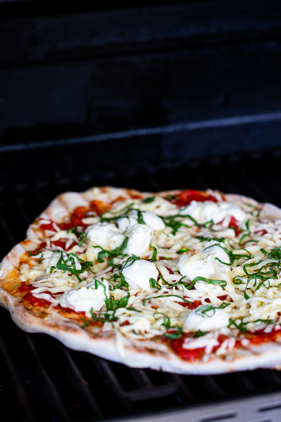

Delicious Margarita Pizza

Description:
The easiest way to make pizza at home is to grill it. Crisp crust, melty cheese and all the basil. This grilled Pizza Margherita is a showstopper!
Ingredients:
- Flour. I use 00 flour because I find it makes the best pizza dough. All purpose flour will also work though. I don’t love making it with bread flour but if that’s all you have, it will still be delicious.
- Instant yeast
- Olive oil
- Warm water
Step by step recipe:
- How to make pizza dough: Whisk the yeast and sugar into warm water and allow to stand for 5 minutes until frothy. In the bowl of a stand mixer fitted with a dough hook, combine the flour and salt. With the mixer running, pour in the yeast mixture. Add the olive oil then allow to knead for a few minutes until the dough is soft, smooth and only slightly tacky. If the dough is very sticky, add a little bit of flour and knead in. Transfer the dough to an oiled bowl, cover with plastic and allow to rise for at least 1 hour. I usually make the dough a few hours before cooking. Once risen, divide the dough into 4 and form into balls. Place on a floured board and cover with a dish cloth and allow to rise for another 30 minutes while you prepare the toppings.
- Make the toppings: To make the sauce, drain off any excess liquid from the tomatoes then crush the tomatoes into a bowl. Season with salt (and your chosen additions if using). Grate/tear the mozzarella and finely slice the basil.
- Prepare the grill: Preheat the grill (braai/barbecue) to its hottest setting. I like to have a cooler zone to move the pizza to should it be needed. If you have a grill with a lid/top you can close, even better. Brush the grill grid with a little oil.
- Grill the pizza: Form the dough into pizza bases with your hands, pressing from the middle, forming the pizza as you go. Take care not to thin it out too much. Transfer the dough to the grid then allow to cook for a few minutes until the dough has started to bubble up. Remove from the grill and place grill side-up on a wooden board. Top the grilled side with sauce, cheese and basil then carefully transfer the pizza back to the grill. Close the grill if possible and allow to cook for a few minutes until the cheese has melted and there is some color on top. Remove from the grill, slice, top with more basil and serve.
